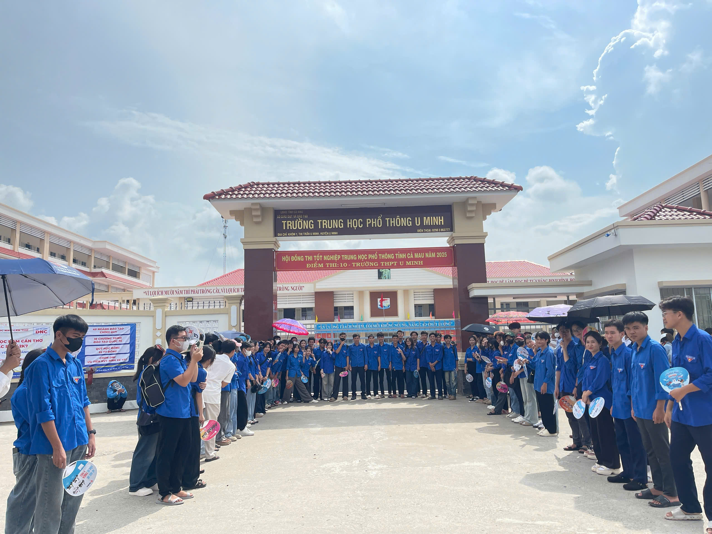
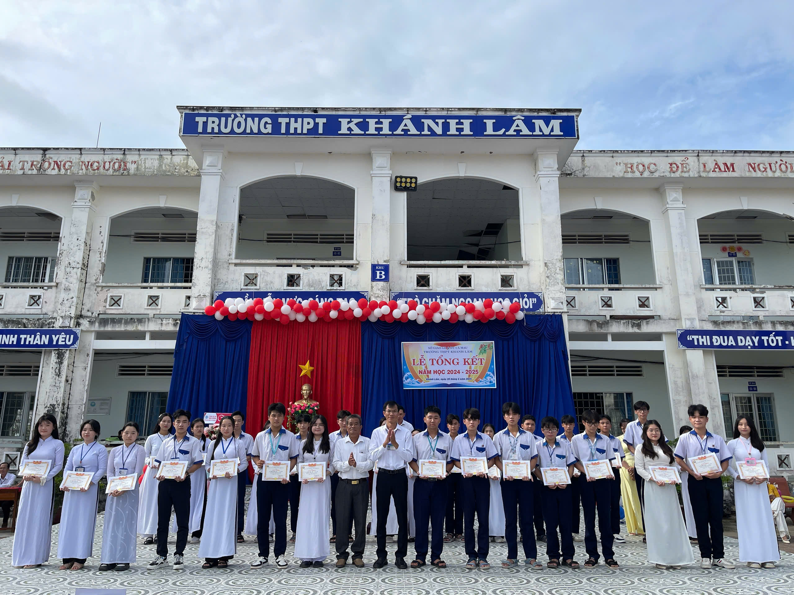

Thể thao
Giải Bóng chuyền Nam sinh cấp trường
Giải đấu thường niên nhằm rèn luyện sức khỏe và tinh thần đoàn kết. Những trận cầu nảy lửa thu hút sự cổ vũ nhiệt tình của toàn trường.
Xem thêm chi tiết ➔
Giải đấu thường niên nhằm rèn luyện sức khỏe và tinh thần đoàn kết. Những trận cầu nảy lửa thu hút sự cổ vũ nhiệt tình của toàn trường.
Xem thêm chi tiết ➔
Những tiết mục múa hát đặc sắc, được đầu tư công phu từ các lớp để tri ân thầy cô giáo nhân ngày Nhà giáo Việt Nam.
Xem thêm chi tiết ➔
Phát huy tinh thần xung kích, sáng tạo của tuổi trẻ qua các chiến dịch tình nguyện, lớp bồi dưỡng cảm tình Đoàn và các hoạt động rèn luyện kỹ năng.
Xem thêm chi tiết ➔
Những bóng áo tình nguyện túc trực tại cổng trường, mang theo nước mát và những lời chúc may mắn tiếp thêm sức mạnh cho sĩ tử.
Xem thêm chi tiết ➔
Giây phút nhìn lại chặng đường nỗ lực với bảng vàng thành tích đáng tự hào và những giọt nước mắt lưu luyến chia tay của học sinh khối 12.
Xem thêm chi tiết ➔
Tiếng trống trường vang vọng cùng cờ hoa rực rỡ, chính thức mở ra một hành trình tri thức mới đầy hứa hẹn cho thầy và trò Khánh Lâm.
Xem thêm chi tiết ➔